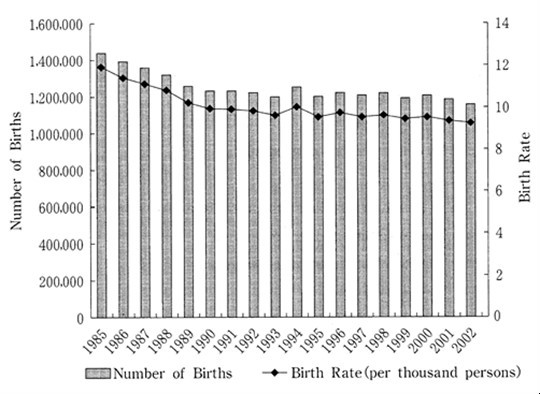
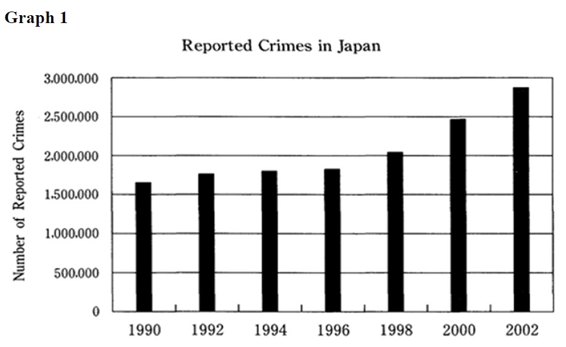
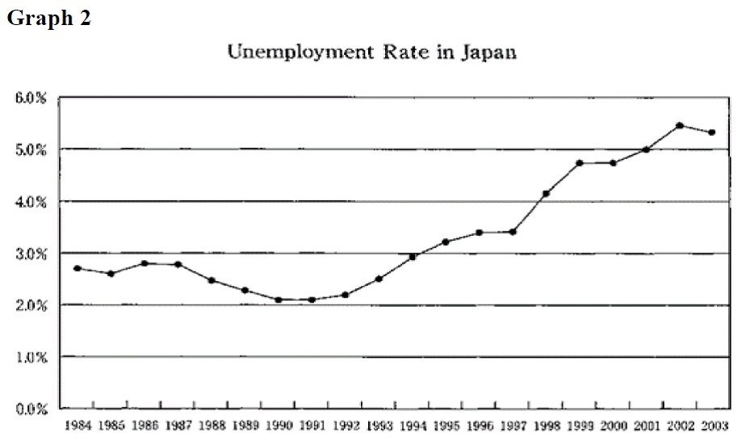

| 大学入試 自由英作文問題 モデル解答集 ＜第4集＞ 改訂版 | |
| 塩川 春彦 | |
| (2017) | |
塩 川 春 彦
帝京科学大学医療科学部（千住キャンパス）教授。
1990年代より、文科省検定済英語教科書Unicorn シリーズ（文英堂）の執筆に携わっている。特に、旧指導要領下の「ライティング」、現指導要領下の「英語表現」では、中心執筆者を務めている。
教科書執筆者としては、「良質な教科書」「結果として入試にも役立つ教科書」を目指していたので、大学入試における自由英作文に注目してきた。また、"高校生のライティング能力をどのように伸ばすべきか"という問題意識は当然持っていたので、自由英作文問題対策の参考書にも目を配ってきた。
「こんな対策本があってもよいのではないか」と思い立って執筆したのが本書である。
その他の主な著書
『英語が使える日本人の育成』（共著、三省堂）
『Interface―ビジネス英文メール入門』
（マクミランランゲージハウス）
『Introduction to MBA English―英語で学ぶ経営学の基礎』
（マクミランランゲージハウス）
『英文ライティング・日英翻訳ベーシックコース』
（DHC総合教育研究所）
The Real World Today（桐原書店）
20 STEPS TO CRITICAL WRITING（共著、桐原書店）
本書は、大学入試における自由英作文問題の典型的な論題群と、それらに対する解答例を提示している。本書の対象は、"志望校の読解問題だけでも確実に合格水準の得点をし、加えて英作文問題で得点を上乗せしたい"という意欲のある受験生である。
本書には、他の自由英作文問題対策参考書に見られない特徴がある。それは、解説を最小限に抑え、受験生には、限られた時間にできるだけ多くの解答例を読むことに集中してほしいという意図を持っていることである。このような意図を持った書籍があってもよいだろうと思ったことが、本書を出版しようと思い立った動機である。
以下に、本書のねらいについて説明する。
本書のねらい
1 自由英作文のための知識の基盤をつくる
本書を読み通すことにより、自由英作文の典型的な諸論題について、"こんな論題にはこういう論点があり、こういう英語表現を用い、このように論理を展開すればよい"という、基本的知識の基盤が形成されるはずである。
ここで言う「基本的知識の基盤」が意味することを具体的に説明したい。本書の解答例の中に出てくる単語やイディオムは、英語を書く際に"使える"語彙である。また、本書の解答例は基本的に、"主題文―支持文―結語"という英語の文章の基本的な構成法にしたがっているので、読み通すことで文章の構成パターンも身につく。さらに、典型的論題群の解答例を読み通して得た知識を組み合わせることによって、他の様々な論題に対応することが可能となるのである。このことは、実際に本書の各章の解答例の後に掲載した「類似論題」「関連論題」の項目を参照し、確かめてほしい。
2 アウトプットの前にインプットを
先に「多くの解答例を読むことに集中してほしい」と書いた。このことの意味を、次に説明したい。ライティングの力を伸ばすためには、"書いて添削してもらうこと"を繰り返す必要があるとされている。それはその通りである。しかし、社会問題の知識も乏しく、ライティングのために"使える"語彙力も貧しく、英語の文章の構成法をきちんと学んでいない学習者が書いた英作文には、せいぜい文法の誤りを添削することくらいしかできない。結局、手本を提示し、「このように書きなさい」となるのである。
やみくもに英作文する前に、"ライティングの手本になる英文"をたくさん読んだ方がよい。一定量以上の良質のインプットがなければ、良いアウトプットはあり得ないのである。ただし、入試の読解問題の英文、進学校で使われる読解用テキストの英文の多くは、受験生にとって"ライティングの手本になる英文"ではない。使われている単語が難しかったり，構文が複雑だったり、書き手の個性が強く出た文体であったりするからである。
本書では、日本人学習者にとっての"ライティングの手本になる英文"を提示しているつもりである。
3 日本語訳から英文再現へ
本書では、後半部分に解答例の日本語訳を掲載している。これらの日本語訳から英文を再現する練習を通して、本書で学んだ知識を血肉化してほしい。
本書は、まず、5巻シリーズとして出版するが、巻を重ねてできるだけ多くの論題に対する解答例を提示していきたいと考えている。本シリーズが受験生のライティング力向上に役立つことを切に願っている。
2016年11月
著者しるす
本書における論題の選定の元になっているのは、著者が作成した過去20年余りの国公立大学の自由英作文問題のデータベースである。本書で取り上げた論題ごとに、他大学で出題された同一論題や類似論題に関する情報を付記しているが、それらは、このデータベースに基づいている。
このデータベースにより、「頻出論題」群も把握でき、「小学校の英語教育の是非」に代表される頻出論題群は当然に取り上げている。
論題選定の基準とデータベース
しかし、論題選定の基準は、"頻出かどうか"だけではない。環境・資源、政治、経済、社会、教育、科学、医療・医学などの分野にまたがる論題群、「尊敬する人」のような信条・好みを書かせる論題群などを概観し、バランスを重視して、本書掲載の論題を選定している。それは、「まえがき」でも述べたように、本書を通して、自由英作文のための「知識の基盤」となるものを提供したいからである。バランスのとれた論題の選定のためにも、このデータベースが貢献している。
本書における論題選定は、著者の気まぐれや好みでなされているわけではないことを強調しておきたい。
各章の構成
・論題
・解答例
・英文の構成
解答例の英文のアウトラインを示す
・過去20年のデータ分析
国公立大学入試における過去20年余りの出題実績データから、同一論題、類似論題、関連論題をピックアップ、本書が示す解答例の応用範囲を示す
[図表・統計解釈～少子高齢化]
The graph below shows changes in birth rate in Japan from 1985 to 2002. Write a two-paragraph essay in English about the graph.
Paragraph 1 (About 50 words).
Describe the data shown in the graph.
Paragraph 2 (About 60 words).
Suggest some reasons (at least two) which could explain the changes in birth rate shown by the graph.
（北海道大学）
＊グラフは次ページに掲載
＊解答例はグラフの後に掲載

少子化の原因
Paragraph 1 解答例
The birth rate dropped steadily from 1985 to 1993. In 1985, there were more than 1,400,000 births, but this number decreased to about 1,200,000 by 1993. Although there was an increase in the birth rate in 1994, the rate continued to be less than 10 per thousand people between 1995 and 2002. (52 words)
英文の構成
(1) 1985年から1993年までの出生率、出生数の推移
(2) 1994年から2002年までの出生率の推移
少子化の原因
Paragraph 2 解答例
There are three reasons for this. First, it is very expensive to raise children in Japan. The recent recession has made this problem more serious. Second, couples with children do not receive enough social support. For example, there are not enough child-care centers. The third reason is that most houses and apartments are small in size. (57 words)
英文の構成
主題文：
（少子化には）少なくとも３つの理由がある
支持文：
（理由１） 子育てにお金がかかる
（理由２） 子育て中の夫婦に十分な社会的な支援がない
（理由３） 家やアパートは狭い
少子化の原因
過去20年のデータ分析
類似論題
少子高齢化の原因、影響、対策のいずれかをテーマにした論題は、広島大学、北海道大学など19大学から出題されている。
関連論題
「少子高齢化対策として移民を多く受け入れるべきか」「日本はより多くの外国人労働者を受け入れるべきか」「移民を社会の中でどう扱うべきか」（一橋大学など）
[社会～経済・ビジネス、環境・資源]
次のことについて，150語程度の英語で答えなさい．
Twenty-four-hour convenience stores are everywhere in Japan. Are they good or bad for Japanese society? Give two reasons to support your opinion.
（長崎大学）
＊解答例は次ページに掲載
コンビニは社会にとって良いものか、悪いものか
解答例
The convenience of convenience stores has had some bad effects on society. First, and most importantly, convenience stores use a lot of electricity. Japan should reduce the number of convenience stores, rather than restarting nuclear power plants. Second, in order to assure availability of a wide range of products, the delivery system needs to be very frequent. That means that innumerable trucks are always on the road throughout this country, causing traffic jams, air pollution, and wasting energy. Third, youngsters can hang out inside and outside the stores until very late at night. They are noisy and affect the people living near the stores. Fourth, being open around the clock, convenience stores are easy targets for robbers. Fifth, the store owners have to work long hours without much time off. It can be said that Japanese society has too many convenience stores, and therefore they are bad for Japanese society. (150 words)
＊英文の構成は次ページに掲載
英文の構成
主題文：
コンビニは社会に悪影響を及ぼしている
支持文：
（具体例1）電力の浪費
（具体例2）高頻度の配送を必要とする
（具体例3）店の内外での若者の徘徊
（具体例4）強盗の誘発
（具体例5）店長の長時間労働
結 語：
コンビニは過剰に存在し、社会にとって悪い
コンビニは社会にとって良いものか、悪いものか
過去20年のデータ分析
類似論題
「コンビニの利点と欠点」「コンビニは深夜も営業しているべきか」（茨城大学など）
[社会～環境・資源、省エネ・省資源、交通]
Write about the following topic using 100 words of English.
Ordinary people should no longer own cars today.
（一橋大学）
＊解答例は次ページに掲載
自動車の個人所有を禁止すべきか
解答例
Many people may think that prohibiting ordinary people from owning cars is an extreme idea. However, I think it is worth considering.
We should revive and develop our public transportation system, and limit the personal use of automobiles. Look at personal passenger cars on the street. In most cases, there is just one person, the driver, in each car. It is a waste of energy and space to use a big, heavy "metal box" to transport one person from one location to another. It goes without saying that these cars cause air pollution and traffic jams. If we have a convenient network of trains, subways, and buses, we don't have to own a car. (114 words)
＊英文の構成は次ページに掲載
英文の構成
導入文：
一般人に自動車所有を禁じる、ということは考慮に値する
主題文：
共交通機関を発展させ、自動車の個人使用を制限すべき
支持文： ＜理由の列挙＞
・路上の各乗用車には、1人の人間がいるだけだ
・1人の人間輸送のために、大きな鉄の箱を用いるのは、エネルギーと空間の浪費
・自動車群は大気汚染や交通渋滞も招いている
結 論：
便利な公共交通システムがあれば、自動車を所有する必要はない
自動車の個人所有を禁止すべきか
過去20年のデータ分析
類似論題
「将来の交通」「自動車の黄金時代は終わりつつあるか」（東京大学など）
関連論題
環境・資源問題をテーマにした論題は、40以上の大学から計50回以上出題されている。それらのうち約3分の1は、「省エネ・省資源のためにできることの具体例」（一橋大学ほか）という頻出論題で、解答例は、本書＜第1集＞に収録している。
[社会～健康・医療、食、広告]
日本人に肥満が増えていることへの対策として、次の(A)～(C)のうち最も効果的と思うものを一つ選び、なぜそれが有効かを説明した英文を70語から90語程度で書きなさい．
(A) encouraging physical activity
(B) limiting advertising of certain kinds of food
(C) promoting education on proper diet
（北海道大学）
＊解答例は次ページに掲載
肥満防止のために、ある種の食品のCMを禁止すべきか
解答例（Bを選択した場合の解答例）
In my opinion, solution (B) would work best. Limiting advertising of certain kinds of food, such as fast foods, can help improve the diet of Japanese people. There are too many ads of fattening foods and drinks containing a lot of fat or sugar. To make matters worse, those advertisements show the food products in very attractive ways. For example, the people in TV commercials of foods are usually charming, and this makes the food look nice. The government should restrict such ads so that fewer and fewer people will eat junk food. (93 words)
＜編者注＞ 類似論題、関連論題への適用や応用ができるように、選択肢(B) を選んでいる。
＊英文の構成は次ページに掲載
英文の構成
主題文：
解決策(B)、すなわち、ある種の食品の広告を制限することは、日本人の食生活を改善する
支持文： ＜理由の論述＞
肥満を招くような食品や飲料の広告は、その食品群を、人を引き付けるような方法で見せる
食品のテレビCMの中の人々は魅力的で、その食品も素敵に見える
結 語：
そのような広告は制限されるべきだ
肥満防止のために、ある種の食品のCMを禁止すべきか
過去20年のデータ分析
類似論題
「ジャンクフードとCMとの関係」「ファストフードの害と販売戦略の巧みさについて」（東京学芸大など）
関連論題
「伝統食かファストフードか」「病院にファストフード店があってはならないか」「日本人の食生活は、肥満を増やしているか」「GM食品にラベル表示すべきか」「子ども番組におけるCMのありかた」（旭川医科大学など）
[図表・統計解釈～経済、犯罪]
Look at the following two graphs and answer the questions.
(1) Describe the data shown in Graph 1.＜About 50 words＞
(2) Suggest some reasons (at least two) that could explain the changes in the number of reported crimes shown by Graph1, referring to the data shown in Graph 2.＜About 75 words＞
（北海道大学）
＊グラフは次ページ以降に掲載
＊解答例はグラフの後に掲載


経済状況と犯罪件数
解答例
(1) Graph 1 shows the number of crimes reported in Japan from 1990 to 2002. There was little increase in the number of crimes between 1990 and 1996. The number stayed around 1.75 million. However, crimes began to increase dramatically in 1998. They jumped from about 2 million in 1998 to almost 3 million in 2002.
英文の構成
主題文：
グラフの概要
支持文：
・1990年から1996年までの推移
・1998年から2002年までの推移
＊次ページに(2)の解答例を掲載
経済状況と犯罪件数
解答例
(2) There was a dramatic increase in the number of crimes after 1998. I can think of two possible factors behind this trend. One was the bad economy. Crimes began to increase in 1998, when the unemployment rate exceeded 4 percent. Many crimes must have been committed by people who became desperate because of the worsening economic condition. Another possible factor was the widening gap between the rich and the poor. It might have caused social tension.
＊英文の構成は次ページに掲載
英文の構成
主題文：
1998年以降に犯罪件数の劇的な増加
支持文： （考えられる要因の列挙）
（要因1）不況から自暴自棄になった人々による犯罪の増加
（要因2）経済格差の拡大による社会的緊張
経済状況と犯罪件数
過去20年のデータ分析
類似論題
「凶悪犯罪増加の原因」（名古屋市立大学）
関連論題
「あなたが目撃した暴力の描写と原因の推定」「少年犯罪への罰則を強化すべきか」「死刑制度の是非」（埼玉大学など）
[社会～情報技術、インターネット]
インターネット・サイトの中には利用者の個人情報を、時として利用者の承諾なしに他の事業者に送られたりすることもある。事業者があなたに関する情報を他の事業者と共有することについてあなたは賛成か、それとも反対か。根拠を示して200語程度の英語であなたの意見を述べよ。（琉球大学）
＊解答例は次ページに掲載
個人情報を第3者へ提供することの是非
解答例
I would not like sites to share my personal information with other companies.
Certainly, Japanese law prohibits business operators from providing personal data to a third party without consent of the person. However, there are some cases in which companies can legally provide personal information to third parties without the consent of the user. Even if the website to which you intentionally give your personal information is secure, the other companies to which it gives or sells your personal data may not be safe. If they do not keep personal data safe, individuals' personal information could be stolen and abused.
We can see some consequent problems. A typical one is that we are sometimes bombarded with unwanted junk mail and pop-up ads. More seriously, if selling and giving personal information continues, some big companies will have huge amounts of individuals' personal data: sex, age, address, income, individual tastes, travel experiences, political ideology, and so on. If these large databases are provided to the government, society can be easily controlled by the government. I don't think it is a good thing.
Japan should prepare a new law which would force companies to allow their users to delete their personal data from the companies' databases. (202 words)
＊英文の構成は次ページに掲載
英文の構成
序 論： ＜メインアイデアの提示＞
個人情報を他の会社と共有してほしくない
本 論：
・企業が、利用者の同意なしに個人情報を第三者に合法的に提供できる場合もある
・個人情報を安全に保管しない企業もあり、盗まれたり悪用されたりすることもある
・結果として起こる問題は、大企業などが膨大な個人情報を収集することだ
・収集された個人情報データは政府に提供されることもあり得る
結 論： ＜論理的帰結＞
利用者が企業のデータベースから自分の個人データを削除できるようにすべき
個人情報を第3者へ提供することの是非
過去20年のデータ分析
関連した論題
「インターネットの利点と欠点」「インターネットは人々の生活をどう変えたか」（新潟大学など7大学）
[社会～教育・学習、就業]
Write 120 to 150 words of English about the topic below.
The main purpose of education is to get a job.
（一橋大学）
＊解答例は次ページに掲載
教育の目的は職業を得るためか
解答例
Certainly, many people try to have a higher education in order to get a better job, in other words, to live a better life. However, to get a job is not everything. The reason is as follows. Even if you study hard and do well, you still may not get the job you want. If fact, many people do not work in the field they studied in university. Even if you never use the knowledge learned in college, it does not mean that the education you received was a waste of time. Education helps people grow as individuals. Education provides you with a wider perspective on various aspects of the world. Education also provides you with logical and critical thinking skills. Of course, society requires education, especially university education, to develop human resources matching highly-specialized jobs. Still, it is not everything. (141 words)
＊英文の構成は次ページに掲載
英文の構成
主題文：
職業を得るだけが教育の目的ではない
支持文： ＜教育の意義の列挙＞
多くの人々は、自分が大学で学んだ分野で仕事をしていないが、受けた教育が時間の浪費だったということを意味しない
（意義1）人を個人として育てる
（意義2）世界について、より広い展望をあなたに与える
（意義3）思考のためのスキルを、あなたに与える。
（反論と再反論）社会は、教育に、高度に専門化した諸職業に適応する人材を養成することを求めているが、それでも、それがすべてはない
教育の目的は職業を得るためか
過去20年のデータ分析
類似論題
「大学教育の意義」（一橋大学など）/ 「教養教育の意義」「大学教育義務化」（新潟大学など）
関連論題
「大学で何を学びたいか」「大学に進学したい理由、目的」（一橋大学、大阪教育大学など15大学）/ 「大学教育に何を望むか」「大学入学以降の人生設計」「専門の勉強以外でしたいこと」「STEM科目(science, technology, engineering, mathematics)の意義」（九州大学など）
[社会～教育・学習]
Do you think high school students should be allowed to work or prevented from working? Why?＜About 100 words＞
（兵庫県立大学）
＊解答例は次ページに掲載
高校生のアルバイトを禁止すべきか、認めるべきか
解答例1 ＜アルバイトを許可すべき＞ （125語。[ ]内を省略すれば98語）
In Japan, many high schools prevent their students from doing part-time jobs. However, I think having a part-time job is a useful experience for several reasons. First, students can learn various things about society that they cannot learn at school. They can also discover what "hard work" and "responsibility" mean. Furthermore, they should not depend on their parents for all their spending money, especially for such things as comics and CDs. In addition, it is meaningful to meet older people and learn from them in the workplace. [Certainly, studying is important, but working a few hours a week or working two weeks in a long vacation does not disrupt their studying.] For these reasons, high school students should be allowed to work. (122 words)
＊英文の構成は次ページに掲載
英文の構成
主題文：
多くの高校がアルバイトを禁じているが、アルバイトをすることは有益だ
支持文： ＜理由の列挙＞
（理由1）学校では学べないことを学べる
（理由2）「勤勉」や「責任」について知る
（理由3）すべての出費について親に頼っていいのか
（理由4）年長の人々との交流、彼らからの学び
（反論と再反論）勉強は大切だが、限られた時間の労働は勉強を阻害しない
結 語：
高校生は働くことを認められるべき
＊次ページに解答例2を掲載
高校生のアルバイトを禁止すべきか、認めるべきか
解答例2 ＜アルバイトを禁止すべき＞ （125語。[ ]内を省略すれば110語）
In Japan, many high schools do not allow their students to have part-time jobs. I think this policy is reasonable. I believe that high school students should concentrate on their school work instead of spending time doing a part-time job. School days are a precious time for them. Club activities are also an opportunity to learn various meaningful things which would be useful for their future life. [Students should focus on pursuing their future goals instead of doing a part-time job.] Certainly, many students whose parents are not rich have to work a part-time job to reduce their parents' burden. For those students, public scholarship programs, not student loans, should be greatly expanded. After all, time is more important than money, especially during their youth. (125 words)
＊英文の構成は次ページに掲載
英文の構成
主題文：
多くの高校がアルバイトを認めていないが、この方針は合理的
支持文： ＜理由の列挙＞
（理由1）学業に集中すべき
（理由2）学生時代は貴重な時間（クラブ活動も意義深い）
（理由3）将来の夢の追求に焦点をあてるべき
（反論と再反論）親の負担を減らすためにアルバイトをする生徒も多いが、彼らのために公的な奨学金制度を拡充すべき
結 語：
時間はお金よりも大切
高校生のアルバイトを禁止すべきか、認めるべきか
過去20年のデータ分析
同一論題を出題した大学
名古屋工業大学、福井大学
類似論題
「高校生にとってのアルバイトの意味」「高校生のアルバイトの是非」「高校生はアルバイトをすべきか」（滋賀大学など） / 「大学生はアルバイトをし過ぎか」「アルバイトの利点と欠点」（富山大学など）
[社会～医療・医学]
代替医療の利用について，あなたは賛成，反対，中立の立場、のいずれをとりますか。あなたの立場を100語程度の英語で書きなさい。
（秋田大学）
＜編者注：この問題の前には，代替医療について説明した英文の読解問題が置かれていた。代替医療とは、世界保健機関の定義では「主流の医療制度に統合されていない医療技法」とされ、薬草（ハーブ）治療、鍼（はり）治療などが代表的なものである＞
＊解答例は次ページに掲載
代替医療への賛否
解答例
I support alternative medicine in that it complements conventional medicine and enhances patients' natural healing power. For example, some people take so many antibiotics and other conventional medications that their bodies develop a tolerance to them and they do not work well. In these cases, the patients need to enhance their natural healing power through alternative medicine. Another example is that some conventional medicines have side effects. In this case, too, using alternative medicine is worth considering. In conclusion, I think alternative medicine can work in cases where conventional medicine does not fully work. (94 words)
＊英文の構成は次ページに掲載
英文の構成
主題文：
代替医療は、通常の医療を補完するという点において支持できる。
支持文：
（具体例1）薬物にたいする耐性ができてしまい、薬物が効かなくなった場合
（具体例2）副作用を伴う通常医療の場合
結 語：
通常の医療が十分に機能していない場合に、代替医療は機能しうる
代替医療への賛否
過去20年のデータ分析
関連論題
「反ワクチン主義への賛否」「身体的痛みはストレスに起因する、という考えへの賛否」（札幌医科大学など）
[国際交流～日本文化社会]
What aspects of Japanese culture do you think would be especially difficult for people from other countries to understand? In English, describe the aspects and give reasons for your answer.＜About 150 words＞
（福岡教育大学）
＊解答例は次ページに掲載
日本文化の一面で外国人にとって理解しにくいこと
解答例
I assume that the following two aspects would be difficult for people from other countries to understand. Firstly, because Japanese society is largely mono-cultural, Japanese people share the same knowledge and assumptions. Therefore, they tend to communicate with each other without providing a detailed verbal explanation. I imagine that the same attitude is very often expressed to foreigners, too, making them confused. This is one aspect of Japanese culture that would be difficult for foreigners to get accustomed to. Secondly, Japan's less diverse society also puts pressure on people to conform to the majority. Japanese people tend to refrain from expressing their own opinions to avoid being singled out. They first try to sense the atmosphere of the group before speaking out. This aspect of Japanese culture would look unreasonable for people who come from societies where standing out from the crowd and being unique are considered to be desirable traits. (151 words)
＊英文の構成は次ページに掲載
英文の構成
主題文：
次の2つの面が、外国人にとって理解困難だろう
支持文： ＜具体例の列挙＞
（具体例1）詳細な言語による説明を省いて意思疎通すること
（具体例2）多数派に同調するように圧力がかかる
日本文化の一面で外国人にとって理解しにくいこと
過去20年のデータ分析
「日本人の曖昧な態度をどう思うか」「他者の前で自己主張をしない日本人をどう思うか」「日本人がしばしば見せる曖昧な態度の具体例」（長崎大学など）
関連論題
「沈黙は金か」「授業中はsilentとcommunicative のどちらがいいか」「日本人の同調志向」（広島大学など） / 「日本の文化、社会に関して外国人に伝えたいこと」（大阪大学など）
[社会～政治]
Recently in Japan, the average age of politicians has been decreasing and some are becoming politicians in their twenties. What do you think about this trend?＜80-100 words＞
（京都工芸繊維大学）
＊解答例は次ページに掲載
若い政治家が増えていることをどう思うか
解答例
I think it is good that more and more young people are choosing a career in politics. First, there are still too many old people in the Japanese political world, although the average age of politicians has been decreasing. The voices of younger generations should be heard more widely. In other words, there should be many more representatives of younger generations in the Japanese policy making process. Second, a society which is dominated by elders is slow to act in response to social changes and global issues. In this sense, too, Japan needs more young leaders. (96 words)
英文の構成
主題文：
若い政治家が増えているのはよいことだ
支持文： ＜理由の列挙＞
（理由１）政治の世界には年配者が多すぎる。若い世代の声が反映されるべき
（理由２）高齢者が支配する社会は，変化への対応が遅い。より多くの若いリーダーが必要
若い政治家が増えていることをどう思うか
過去20年のデータ分析
関連論題
「選挙年齢を18歳に引き下げるべきか」「選挙年齢が18歳に引き下げられたことへの賛否」（東京大学など7大学）
[社会～国際社会、政治]
Write about the following topic using 100 words of English.
A nuclear war is winnable.
（一橋大学）
＊解答例は次ページに掲載
核戦争に勝者はあるか
解答例
Some people say that a nuclear war is winnable. But I don't agree with this idea. It is clear that nuclear war is not winnable. Once a nuclear weapon is used, it will kill most people and completely destroy everything, including the ecosystem, in the surrounding area. After destroying everything, what would you win? Furthermore, the nuclear explosion will cause serious global environmental destruction, which will last for generations. Some people say, "There are usable small-sized nuclear weapons." That idea is also wrong. We should remember that thousands of people have gotten cancer and other diseases because of radioactive pollution around Chernobyl. (102 words)
＊英文の構成は次ページに掲載
英文の構成
主題文：
核戦争に勝者はない
支持文： ＜理由の列挙＞
（理由1）核兵器使用によりすべてを破壊した後には何も得られない
（理由2）核爆発は深刻な地球規模の環境破壊をもたらす
（理由3）「使用可能な小型核兵器」も放射能汚染をもたらすので、間違った考えだ
核戦争に勝者はあるか
過去20年のデータ分析
類似論題
「日本は核保有国になるべきか」（一橋大学）
関連論題
「世界平和という概念は非現実的か」「戦争を防ぐためには何が必要か」（一橋大学など）
[信条・好み～文化・娯楽]
Some people think that spending time and money on amusements in general is worthless. Do you agree or disagree? Give reasons for your viewpoints.＜80-100 words＞
(東京工業大学)
＊解答例は次ページに掲載
娯楽の意義
解答例：
I don't think that spending time and money on having a good time is worthless. Of course you shouldn't spend too much money on amusement, but a reasonable amount is fine. People work hard to make money. Therefore, they should be able to spend some on something that makes them happy such as enjoying sports, movies, art, and so on. Besides, relaxing and having fun reduces stress and gives you energy to work even harder. Also, enjoying various kinds of art develops your personality and creativity. Amusements are essential to your happiness. (92 words)
＊英文の構成は次ページに掲載
英文の構成
主題文：
娯楽に時間やお金を費やすことは価値のないことではない
主題文：
（理由1）懸命に働いていた人は、娯楽にいくらかのお金を使えるべき
（理由2）楽しく過ごすことはストレスを減らし、さらに働くためのエネルギーを与える
（理由3）芸術を楽しむことは、人格や創造力を涵養する
結 語： 娯楽は幸福のために必要
娯楽の意義
過去20年のデータ分析
類似論題
「芸術作品は不要な贅沢品か」（北九州市立大学）
[信条・好み～文化・娯楽]
Do you prefer to watch movies in a movie theater or at home? Why? ＜80-100 words＞
（電気通信大）
＊解答例は次ページに掲載
映画を観るなら、映画館かDVDか
解答例1 ＜映画館が良い＞
Many people who like movies enjoy movies on DVDs more often than at theaters, but I definitely prefer to go to movie theaters. It is more exciting to watch movies on a big screen with impressive sound effects. Also, you can concentrate better on the movie in a dark movie theater. In addition, you can see the latest movies in theaters. These facts show that going to theaters is much better than watching DVDs. I strongly recommend movie theaters for enjoying movies to the fullest. (85 words)
＊英文の構成は次ページに掲載
英文の構成
主題文：
映画は、映画館に行って楽しむべきだ
支持文： ＜理由の列挙＞
（理由1）大きなスクリーンと音響効果で、興奮できる
（理由2）暗い劇場で、映画により集中できる
（理由3）最新の映画を観られる
結 語：
映画を十分に楽しみたいなら、映画館に行くべき
＊次ページに解答例2を掲載
映画を観るなら、映画館かDVDか
解答例2 ＜DVDが良い＞
As a movie fan, I sometimes go to movie theaters, but I usually prefer to watch DVDs at home. One reason is that you can watch movies whenever you like. Also, it is much cheaper to rent DVDs at a rental shop than go to the theater and buy tickets. In addition, it is more relaxing to watch movies at home. Furthermore, you can watch your favorite films again and again on DVDs. In conclusion, I think that renting and watching DVDs is better than going to theaters. (88 words)
＊英文の構成は次ページに掲載
英文の構成
主題文：
家でDVDを見るほうがよい。
支持文： ＜理由の列挙＞
（理由１） いつでも好きなときに映画を見られる
（理由２） DVDを借りるほうが映画館に行くより安い。
（理由３） 家で映画を見るほうがリラックスできる。
（理由４） DVDなら、気に入った映画を何度も見られる。
結 語：
映画館に行くよりDVDを借りて見るほうがよい。
映画を観るなら、映画館かDVDか
過去20年のデータ分析
関連論題
「好きな映画」「映画館かDVDか」「日本の映画館数の推移」（静岡大学など7大学）
[信条・好み～居住地]
あなたは将来，都会と田舎のどちらに住みたいでしょうか。その長所と短所を含めて，選んだ理由を150語程度の英文で書きなさい。
（茨城大学）
＊解答例は次ページに掲載
解答例1＜都会に住みたい＞
It is preferable to live in a big urban city. First, you can get all the modern life in a big city. For example, in a big city there are public transportation systems, good hospitals, good job opportunities, and many kinds of businesses you can open and run. Second, there are a lot of recreational places for fun in a big city. For example, you can enjoy holidays by going to movie theaters, restaurants, and entertainment places like amusement parks. Lastly, in a big city you have a good education system including different types of schools and universities. Some may say that pollution in cities makes people sick. However, with automobiles and modern expressways you can easily take a break and expose yourself to fresh air in the countryside and sunshine on the beach. In conclusion, living in a big city is much better than living in a small town in a rural area. (154 words)
＊英文の構成は次ページに掲載
英文の構成
主題文：
都会で暮らす方がよい。
支持文： ＜都会の長所の列挙＞
（長所1）近代的な暮らしができる（公共交通網、病院など）
（長所2）様々な娯楽施設がある
（長所3）良い教育が受けられる
（反論と再反論）都会の空気は汚れているが、自動車を使えば田舎の空気と太陽の光に触れることができる
結 語：
結局、大都市で暮らす方が、小都市で暮らすより、良い。
＊次ページに解答例2を掲載
都会と田舎のどちらに住みたいか
解答例2（田舎に住みたい）
Although many people may choose to live in a big city, it is preferable to live in a small town in a rural area. There are at least two reasons for this. First, living in a small local town, which is rich in nature, gives you a clean atmosphere and a comfortable life. For example, the pastoral view makes you feel good and the singing of birds in the trees makes you happy. Furthermore, the breathtaking view of the night sky full of twinkling stars takes away your tiredness. Second, in a small town you have a relaxed life. For example, the neighbors are friendly and the pace of living is stress-free. Certainly, in big urban cities there are many modern facilities such as shopping malls, good schools, and modern hospitals. However, I still believe country life is more enjoyable and beneficial for your health. In conclusion, living in a small town in the countryside is the smart choice. (159 words)
＊英文の構成は次ページに掲載
英文の構成
主題文：
大都市よりも小都市で暮らすほうがよい
支持文： ＜田舎の長所の列挙＞
（長所1）きれいな環境、快適な暮らし、田園風景 ...
（長所2）リラックスした暮らし、親しみやすい隣人 ...
（反論と再反論）大都市には近代的な施設があるが、田舎のほうが楽しめて健康的
結 語：
田舎で暮らすほうが賢い選択だ
都会と田舎のどちらに住みたいか
過去20年のデータ分析
同一論題
愛媛大学、小樽商大など9大学
類似論題
「どこに住みたいか」（名古屋市立大学など7大学）
[信条・好み～国際交流、ホームタウン]
あなたの学校に外国から留学生がやって来たので、あなたが住む地域（都道府県）の観光地に案内することになった。最初にどこに案内し、何を説明したいと思うか。＜約100語＞
(福井大学)
＊解答例は次ページに掲載
外国人訪問客を案内したい地元の観光地
解答例
If a foreign student comes to my school, I will first take the student to the city museum. The museum shows how our city has developed over the years. I will tell the student that our city used to be an undeveloped area with a small population. Then, about one hundred years ago, it began to be developed by people who came from other parts of Japan. I will emphasize that those pioneers strived to survive in the harsh climate and made this land good for farming. I want to show the people's efforts which led to the present prosperity of our city. (103 words)
＜編者注＞ 日本の様々な地域にあてはまりそうな物語をつくり、汎用的な解答例とした。
＊英文の構成
英文の構成
主題文： 外国人学生を市の博物館に連れていく
支持文： ＜そこで説明したいこと＞
・その博物館は、私たちの市がどのように発展してきたかを教えてくれる
・私たちの市は、かつては未開発の地域であったが、先人の努力で現在の繁栄となった
外国人訪問客を案内したい地元の観光地
過去20年のデータ分析
同一問題を出題した大学
静岡大学
類似論題
「外国人客を連れていきたい場所」「外国人に訪問してほしい場所」「地元で最も素敵な場所」「地元を魅力的に紹介する」「住んでいる場所の長所と短所」（東北大学など）
[希望・夢～大学]
Write 120 to 150 words of English about the topic below.
Describe what you would like to acquire at Hitotsubashi University if you are accepted.
（一橋大学・改題）
＊解答例は次ページに掲載
大学で何を得たいか
解答例
What I would like to acquire at Hitotsubashi University is knowledge and skills to be a good lawyer. In the future, I would like to become a lawyer specializing in human rights and international law. In order to realize my dream, I would like to gain necessary knowledge and skills. First of all, I would like to obtain a wide knowledge base through liberal-arts courses. Also, especially during the first two years, I would like to improve my communication skills in English. Then I would like to tackle specialized courses on the study of law. I hear that it is extremely difficult to pass the bar examination. However, the law department of Hitotsubashi University, which has excellent faculty members, enjoys a very good reputation. I believe I can acquire a high level of knowledge and skills, if I work very hard. (141 words)
＊英文の構成は次ページに掲載
英文の構成
主題文：
優秀な弁護士になるための知識・技能を獲得したい。
支持文： （具体例の列挙）
・将来に人権と国際法を専門とするための知識・技能
・広い知識基盤
・英語のコミュニケーション能力
・専門知識
・司法試験は難しいが、一橋大には優秀な教授陣がいる
結 語：
懸命に学べば高いレベルの知識・技能を習得できるだろう。
＜編者注＞ 出題時のオリジナルの論題は、"Describe one thing that you would like to acquire ..." となっており、大学で獲得したいもののうち一つに絞って論述せよ、というものであった。通例、このような問題では、受験生は、「大学に入ったら、こんなことを学びたい、あんなこともしたい」とあれこれ希望を列挙して、求められる語数を満たせばよい。しかし、元の論題は、"一つだけ取り上げて"論述することを求めており、かなり意地が悪い。そのような要求に応える練習をするより、より一般的な論題の解答例が受験生には役に立つのではないかと考え、改題した上で解答例を作成した。
大学で何を得たいか
過去20年のデータ分析
類似論題
「大学で何を学びたいか」「大学入学以降の人生設計」（福島大学、大阪教育大学など17大学）
関連論題
「専門の勉強以外でしたいこと」（宮城教育大学など）
[客観説明～絵・写真の描写]
日本の千円札について、例えばその表・裏のデザインなどを100語程度の英語で書きなさい。
（静岡大学・改題）
＊解答例は次ページに掲載
千円札のデザインの描写
解答例
The one thousand yen bill is printed mainly in blue ink. When you look at the front side, you can see kanji-characters saying 1,000 yen on the left. On the right, you can see the portrait of a famous medical doctor, Noguchi Hideyo. In the middle, there is an oval in which there is a watermark face of Noguchi Hideyo. When you look at the other side of the bill, you can see Mt. Fuji on the left and cherry blossoms on the right. Again there is an oval with a watermark in the middle. On both sides, you can see many gradations of colors between light and dark blue. (110 words)
＊英文の構成は次ページに掲載
英文の構成
主題文：
全体のトーン
支持文：
(1) 表面の描写： 左側、右側、中心部
(2) 裏側の描写： 左側、右側、中心部
結 語：
主題文の言い換え
＜編者注＞ この論題は、出題時には「日本の千円札を頭の中にイメージしてください。あなたがイメージした千円札について、例えばその表・裏のデザインなどを100語程度の英語で書きなさい」というものだった。記憶を頼りにこの論題に解答するのは相当に困難であるので、本書では改題した。この解答例を、実物の千円札と見比べながら、絵・写真などを描写する仕方の参考例にしてほしい。
千円札のデザインの描写
過去20年のデータ分析
類似論題
絵・写真を言葉で説明する問題
一橋大学など20大学で30回以上出題されている
4コマ漫画などのマンガを言葉で説明する問題
東京学芸大学など10大学で少なくとも13回出題されている
絵を見て物語を創作する問題
神戸市外国語大学など5大学で出題
[客観説明～日本文化社会]
「塾」という言葉を、外国から来て日本の事情を知らない人に英語で説明しなさい。＜100語＞
（都留文科大学）
＊解答例は次ページに掲載
「塾」とは
解答例
Juku mainly refers to private cram schools which offer lessons in the academic subjects that are important in school entrance examinations. This kind ofjuku is often called gakushu-juku.Gakushu-juku is categorized into two types: one offers special courses for the students who want to attend well-known schools or universities; the other offers students a chance to review their studies or ask private instructors the things they cannot understand at school.Juku sometimes refers to small private schools which offer lessons in nonacademic skills such asshodo, or calligraphy, andsoroban, or Japanese abacus. (95 words)
＊英文の構成は次ページに掲載
英文の構成
主題文：
（定義）塾＝学習塾
支持文： （分類）
進学塾、補習塾
書道塾、そろばん塾
「塾」とは
過去20年のデータ分析
関連論題
日本の文化や社会に特有の事物を取り上げて百科事典的な説明を求める論題は、千葉大学、筑波大学など10以上の大学から20以上のテーマで出題されている（例：初詣、金魚すくい、俳句、書道、クールビズなど...）
[日常生活～スポーツ]
次の文を文頭にして6-9文程度書き加えてパラグラフを書きなさい。
Playing team sports and playing individual sports can each be enjoyable in certain ways.
（静岡県立大学）
＊解答例は次ページに掲載
チームスポーツと個人スポーツ
解答例
Playing team sports and playing individual sports can each be enjoyable in certain ways. In team sports you can share the joy of a victory with your teammates. Practice is also fun when you have your friends around you. Even when you lose, you can deepen your friendship by sharing the same feelings. On the other hand, in individual sports you easily judge your performance. Each time you can try to do better than the time before. In this way you can be happy about improving your ability. Anyway, both team sports and individual sports are fun. (97 words)
＊英文の構成は次ページに掲載
英文の構成
主題文：
チームスポーツも個人スポーツも楽しい
支持文：
（チームスポーツ） チームメートとの感情の共有、友情
（個人スポーツ） 自分の能力がわかり、向上させる喜び
結 語：
共に楽しい
チームスポーツと個人スポーツ
過去20年のデータ分析
関連論題
「あなたが楽しんでいるスポーツ」「好きなスポーツ、嫌いなスポーツ」（京都府立大学など）
第2部では、第1部に提示した各解答例の日本語訳を掲載する。日本語訳から英文を再現する練習をしてほしい。
本書における日本語訳について
本書における日本語訳は、英文再現練習のための日本語訳である。したがって、元の英文を想起しやすいような日本語に意図的にしてある。
具体的には、「無生物主語は副詞的に訳す」のような、自然な日本語に翻訳するためのテクニックにはこだわらず、意味不明な日本語にならない限り、主語は主語的に、目的語は目的語的に、修飾語と被修飾語は修飾関係が分かるように、というような具合に訳している。
ぎこちない日本語になっている部分もあるが、そのような事情によるものである。
Paragraph 1＜グラフの説明＞
出生率は、1985年から1993年までに着実に減少していった。1985年には、140万の出生数があったが、この数字は1993年までに120万に減少した。1994年には出生率の増加があったが、出生率は、1995年から2002年まで、千人あたり10人以下であり続けた。
Paragraph 2＜少子化の原因＞
これには３つの理由がある。第1に、日本では子どもを育てるのにとてもお金がかかる。最近の不景気はこの問題をより深刻にしている。第2に、子供をもつ夫婦は十分な社会的支援を受けていない。たとえば、十分な数の保育園がない。第3の理由は、ほとんどの家やアパートは狭い、ということだ。
コンビニの便利さは、社会にいくつかの悪い影響を与えている。第1に、そして最も重要なこととして、コンビニは大量の電気を使う。日本は、原発を再稼働するよりは、コンビニの数を減らすべきなのである。第2に、多様な商品を入手できることを可能にするために、配送システムは高頻度である必要がある。それは、数えきれないほどのトラックが、交通渋滞、大気汚染、エネルギー浪費をもたらしながら、常時、この国じゅうの道路上にいることを意味している。第3に、若者が深夜まで店の中や外をうろうろできる。彼らは、騒がしく、店の近隣に住んでいる住民に影響を及ぼしている。第4に、24時間営業をしているので、コンビニは強盗にとって恰好のターゲットである。第5に、店長たちは、大した休暇もなしに、長時間労働をしなければならない。日本にはコンビニが多すぎ、それゆえ、それらは日本社会にとって悪いことだ、と言うことができる。
一般人に自動車を持つことを禁じるというのは極端な考えだ、と多くの人々は考えるかもしれない。しかしながら、それは考慮に値する、と私は思う。
我々は、我々の公共交通機関を再生し発展させ、自動車の個人使用を制限すべきである。路上の個人用乗用車を見よ。ほとんどの場合、各車両の中には、一人の人間、つまり運転者がいるだけだ。一人の人間をある場所から他の場所まで運ぶために、大きくて重たい金属の箱を用いるのは、エネルギーと空間の浪費である。これらの自動車群が大気汚染や交通渋滞を起こしていることは、言うまでもない。我々が、使い勝手の良い列車、地下鉄、バスのネットワークを持っていれば、自動車を所有する必要はないのである。
私の意見では、解決策(B)が最も効果があるだろう。ファストフードのような、ある種の食品を宣伝することを制限することは、日本人の食生活を改善することに貢献しうる。多くの脂肪や砂糖を含んでいる、肥満を招くような食品や飲料の広告ががあまりにも多い。さらに悪いことには、それらの広告は、その食品群をとても人を引き付けるような方法で見せるのである。例えば、食品のテレビCMの中の人々はたいてい魅力的で、そして、このことがその食品を素敵に見えるようにするのである。政府は、ジャンクフードを食べる人々がさらにもっと減るように、そのような広告を制限すべきだ。
(1) グラフ1は、1990年から2002年までに、日本で報告された犯罪件数である。1990年から1996年までは犯罪件数はほとんど増えていない。その数は175万のあたりで留まっていた。しかし、1998年に犯罪は劇的に増え始めた。それらは、1998年の約200万件から2002年の約300万件に跳ね上がった。
(2) 1998年以降に犯罪件数の劇的な増加があった。この傾向の背景にありうる要因を、私は２つ思いつける。一つは、不況であった。犯罪は1998年に増加し始めたが、その年に失業率が4パーセントを超えたのだ。多くの犯罪は、悪化していく経済状態のゆえに自暴自棄になった人々によって犯されたに違いない。もう一つの考えられる要因は、富裕層と貧困層の間の広がり続けた格差であった。それは、社会的緊張をもたらしたかもしれない。
私は、サイトに自分の個人情報を他の会社と共有してほしくない。
確かに、日本の法律は、事業者たちに個人データを、該当者の同意なしに第三者に提供することを禁じている。しかしながら、企業が、利用者の同意なしに個人情報を第三者に合法的に提供できる場合もある。あなたが自分の意思で自分の個人情報を提供するウェブサイトがたとえ安全であっても、そのサイトがあなたの個人データを提供したり売ったりする先の他の企業は安全でないかもしれない。もしその企業が個人データを安全に保管しなければ、各個人の個人情報は盗まれたり悪用されたりする。
その結果としてのいくつかの問題が見えてくる。典型的なものは、我々は時々、望んでいないジャンクメールやポップアップ広告をあびせられることだ。もっと深刻なことに、もし個人情報を売ったり提供したりすることが続けば、いくつかの大企業は膨大な量の個人データを持つことになるだろう。たとえば、性別、年齢、住所、収入、個人的嗜好、旅行経験、政治的思想、などだ。もしこれらの大規模データベースが政府に提供されれば、社会は政府に容易に支配されうる。それが良いことであるとは私は思わない。
「利用者が企業のデータベースから自分の個人データを削除することを、企業が許すこと」を企業に強制する法律を、日本は用意するべきである。
確かに、多くの人々は、より良い仕事を得るために、言い換えれば、より良い生活をするために、より高い教育を受けようとする。しかしながら、仕事を得ることがすべてではない。理由は以下の通りである。たとえあなたがどんなに懸命に勉強し、そして上手くやっても、自分が望む仕事を得られないかもしれない。実際、多くの人々は、自分たちが大学で学んだ分野で仕事をしていない。たとえあなたが大学で学ばれた知識を使っていないとしても、あなたが受けた教育が時間の浪費だったということを意味しない。教育は、人々が個人として成長することを助力する。教育は、世界の様々な局面について、より広い展望をあなたに与えてくれる。教育はまた、論理的そして批判的な思考のためのスキルを、あなたに与える。もちろん、社会は、教育に、特に大学教育に、高度に専門化した諸職業に適応する人材を養成することを求めている。それでも、それがすべてはない。
解答例1 ＜アルバイトを認めるべき＞
日本では、多くの高校が、生徒たちにアルバイトをすることを禁じている。しかしながら、私は、いくつかの理由で、アルバイトをすることは有益な経験だと思う。第1に、生徒たちは、社会についての、学校では学べない様々なことを学ぶことができる。彼らはまた、「勤勉」や「責任」が意味するところを発見することができる。さらに、彼らは、自分たちのすべての出費について親に頼る、ということをすべきでない―特に漫画やCDのようなものについては（そう言える）。加えて、職場で年長の人々に会い、彼らから学ぶことは意味がある。確かに勉強は大切だが、週に数時間、あるいは長期休み中の2週間は、彼らの勉強を阻害しない。これらの理由で、高校生は働くことを認められるべきである。
＊次ページに解答例2を掲載
高校生のアルバイトを禁止すべきか、認めるべきか
解答例2 ＜アルバイトを禁止すべき＞
日本では、多くの高校が、生徒たちにアルバイトをすることを許可していない。私はこの方針は、合理的なものだと思う。高校生は、アルバイトに時間を費やすのではなく、学業に集中すべきである、と私は信じる。学校時代は、彼らにとって貴重な時間である。クラブ活動もまた、後の人生で役に立つであろう様々な意義深いことを学ぶ機会である。生徒たちは、アルバイトをするのではなく将来の夢の追求に焦点をあてるべきだ。確かに、親が裕福でない多くの生徒たちは、親の負担を減らすためにアルバイトをしなくてはならない。そういった生徒たちのためには、学生ローンではなく公的な奨学金制度が大幅に拡大されるべきである。結局、時間はお金よりも大切なのだ、特に若い時には。
私は、代替医療は通常医療を補完し患者の自然治癒力を高めるという点において、代替治療を支持する。例えば、多くの抗生物質や他の通常の薬物の治療を受けている人々がいる。そしてそれがゆえに、それらの患者たちの身体が薬物にたいする耐性を発達させてしまい、薬物が効かなくなってしまうということがある。これらの事例では、患者たちは代替治療を通して自らの自然治癒力を向上させる必要がある。他の例は、通常医療の中には副作用を持つものがある、ということだ。この場合も、代替医療は検討する価値がある。結論として、通常医療が十分に機能していない場合に代替医療は機能しうる、と私は考える。
他の国々から来た人々にとって、次の2つの面を理解するのが難しいだろう、と私は推測する。第1に、日本社会はおおむね単一文化なので、日本人は同じ知識や前提を共有している。それゆえ、彼らは詳細な言語による説明を供給することなしに互いに意思疎通をする傾向がある。同じ態度が外国人にも、とてもしばしば表されていて、彼らを困惑させている、と私は想像する。これは、外国人にとって慣れるのが難しいであろう日本文化の一側面である。第2に、日本の、あまり多様でない社会は、さらに、人々に多数派に同調するように圧力を加える。日本人は、一人だけ浮いてしまうことを避けるために、自分の意見を表明することを慎む傾向がある。彼らは、発言する前に、まず、集団の雰囲気を感じ取ろうとする。集団の中で目立ち、個性的であることが望ましい特性とみなされる社会から来た人々にとって、日本文化のこの面は不合理に見えるだろう。
ますます多くの若い人々が政治に職業を選んでいることは、私はよいことだと思う。第1に、政治家の平均年齢は下がっているが、日本の政治の世界では、まだ、あまりにも多くの年配者がいる。より若い世代の声がもっと広く聞かれるべきである。言い換えれば、日本の政策策定過程では、もっと多くの、より若い世代の代表者がいるべきなのである。第2に、高齢の人びとによって支配される社会は，社会的変化や地球規模の諸問題に対応して行動するのが遅い。この意味でも、日本は若い指導者たちが必要なのである。
核戦争にも勝者がありえる、という人々がいる。私はこの考えに賛成できない。核戦争に勝者がないことは明らかである。ひとたび核兵器が使われたら、それは、その周辺の、ほとんどの人間、そして生態系を含むあらゆるものを破壊してしまうだろう。すべてを破壊した後に何を勝ち取ることができるのであろうか。さらに、核爆発は深刻な地球規模の環境破壊をもたらし、それは何世代も続く。「使用可能な小型核兵器がある」と言う人びともいるが、そういう考えも間違っている。チェルノブイリ周辺における放射能汚染のせいで、その後、何千人もの人びとのガンやその他の病気の原因になっていることを、我々は思い起こすべきである。
楽しい時間を過ごすために時間やお金を費やすことは価値のないこと、とは私は思わない。もちろん、あなたは娯楽にお金をかけすぎるべきでないが、適正な額ならよい。人々はお金を稼ぐために懸命に働く。したがって、スポーツ、映画、芸術などを楽しむことのような、自分を楽しくさせてくれるものにいくらかのお金を使うことができるべきなのだ。さらに、リラックスし楽しく過ごすことはストレスを減らし、さらにもっと懸命に働くためのエネルギーを与える。また、さまざまな芸術を楽しむことは、人格や創造力を涵養する。娯楽は、幸せのために不可欠なものだ。
解答例1 ＜映画館が良い＞
多くの映画好きの人々は、映画館よりもDVDでより頻繁に映画を楽しむが、私は断然映画館に行くことを好む。印象的な音響効果を伴った大型スクリーンで映画を見ることは、より興奮させる。さらに、暗い映画館の中では、映画により良く集中できる。加えて、映画館では最新の映画を観ることができる。これらの事実は、映画館に行くことのほうがDVDを見るよりもずっと良いことを示している。映画を最大限に楽しむためには、私は映画館を強く勧める。
＊次ページに解答例2を掲載
映画を観るなら、映画館かDVDか
解答例2 ＜DVDが良い＞
映画ファンとして、私は時には映画館に行くが、たいていは家でDVDを観ることを好む。一つの理由は、いつでも好きな時に映画を観ることができるということだ。さらに、レンタルショップでDVDを借りる方が、劇場に行ってチケットを買うよりもずっと安い。加えて、家で映画をみることは、よりくつろがせてくれる。さらに、あなたは自分のお気に入りの映画を何度も何度もDVDで観ることができる。結論として、DVDを借りて観るほうが劇場に行くよりも良いと思う。
解答例1 ＜都会に住みたい＞
大都市で暮らす方が好ましい。第1に、大都市では近代的な暮らし満喫できる。例えば、大都市には公共交通網、良い病院、良い就業機会、起業可能な多くの種類のビジネスがある。第2に、大都市には多くの娯楽施設がある。例えば、あなたは、映画館、レストラン、アミューズメントパークのような娯楽施設に行くことで、休日を楽しむことができる。最後に、大都市では、様々な種類の学校や大学を含めて、良い教育制度がある。都市の汚染が人々を病気にする、という人々もいるかもしれない。しかし、自動車や近代的な高速道路を使えば、あなたは簡単に休息ができ、田舎の新鮮な空気や浜辺での太陽の光に自身をさらすことができる。結論として、大都市で暮らす方が、田舎の小都市で暮らすよりずっと良い。
＊次ページに解答例2を掲載
都会と田舎のどちらに住みたいか
解答例2 ＜田舎に住みたい＞
多くの人々が大都市に住むことを選択しているかもしれないが、田舎の小さな町に住むことが好ましい。これには、少なくとも2つの理由がある。第1に、自然ゆたかな小さな地方の町に住むことは、きれいな環境と快適な暮らしをあなたに提供してくれる。例えば、田園風景はあなたを気持ちよくさせ、木々の鳥たちのさえずりはあなたを幸せな気分にする。さらに、きらめく星たちに満ちた、息をのむような夜空の景色は、あなたの疲れを取り去る。第2に、小さな町ではくつろいだ暮らしができる。例えば、隣人たちは親しみがあり、生活のペースはストレスなしだ。確かに、大都市には、ショッピングモール、良い学校、近代的な病院など、多くの近代的な設備がある。しかし、それでも田舎の暮らしの方が楽しくかつ健康のために有益だと私は信じる。結論として、田舎の小さな町に住むことは賢い選択である。
もし、外国人学生が私の学校に来たなら、私は、まず、その学生を市の博物館に連れていくつもりだ。その博物館は、私たちの市が長い年月をかけてどのように発展してきたかを教えてくれる。私は、その学生に、私たちの市がかつては人口の少ない未開発の地域であったことを伝えるだろう。そのあと、約100年前、それは日本の他の場所からやってきた人々によって開発され始めた。私は、それらの開拓者たちが厳しい気候の中を生き延びるために奮闘し、ここの土地を農業に適するようにしたことを強調するだろう。私たちの市の現在の繁栄に導いた人々の努力を紹介したい。
私が一橋大学で身に着けたいことは、優秀な弁護士になるために知識や技能である。私は、将来、人権と国際法を専門とする弁護士になりたいと思っている。私の夢を実現するために、私は必要な知識と技能を身につけたいのである。第1に、一般教養コースで広い範囲の知識の基盤を獲得したいと思う。さらに、特に最初の2年間に、私は、英語のコミュニケーション能力を高めたい。それから、法学の専門科目群に真剣に取り組みたい。司法試験に合格することは大変に難しい、と私は聞いている。しかし、一橋大学の法学部は、素晴らしい教授陣を抱え、良い評価を得ている。私は、懸命に勉強すれば、高い水準の知識と技能を習得できる、と信じている。
千円札は、主に青色のインクで印刷されている。あなたは表面を見ると、あなたは左側に千円という漢字を見ることができる。右側には、あなたは、有名な医師、野口英世の肖像が見える。中心部には楕円があり、その中に野口英世の顔の透かし模様がある。あなたは、もう片面を見ると、あなたは、左側に富士山を、右側に桜を見ることができる。中心部には、やはり、透かし模様を伴った楕円がある。両面で、あなたは淡い青色と濃い青色の間の多くのグラデーションを見ることができる。
塾は、主に、学校の入学試験で重要な教科目の授業を提供する、民間の詰め込み教育の学校を意味する。この種の塾は、しばしば、学習塾とも呼ばれる。学習塾は２つのタイプに分類される。一つは、有名な学校・大学に行きたい生徒たちに特別な授業を提供する。もう一つは、生徒たちの勉強の復習をしたり、理解できないところを私塾の先生に質問したりする機会を与える。塾は、書道やそろばんなど、教科目ではない技能の授業を提供する民間の学校を指すこともある。
チームスポーツをすることも個人スポーツをすることも、それぞれにそれなりに楽しめるものである。チームスポーツでは、あなたはチームメイトと勝利の喜びを共有することができる。友人たちがあなたの回りにいる時は、練習もまた楽しいものだ。あなたが負ける時でさえ、あなたは友情を深め、同じ感情を共有することができる。一方、個人スポーツでは、あなたは自分のパフォーマンスを容易に判定できる。あなたは、毎回、前よりは上手くやろうとすることができる。このように自分の能力を向上させることに関して、あなたは幸福になれる。いずれにしても、チームスポーツも個人スポーツも共に楽しいものだ。
＜第1集＞ 収録論題
1 小学校での英語教育の是非（一橋大学など）
2 選挙年齢が18歳に引き下げられたことへの賛否（愛知教育大など）
3 少子高齢化がもたらす問題（東北大学など）
4 日本は原発を廃止できるか（弘前大学など）
5 同性婚が認められるべき理由 （一橋大学）
6 SNS の利点と欠点（名古屋市立大学）
7 若者はTV離れしているか（秋田県立大学）
8 日本の食の安全と確保をどう見るか（福井大学）
9 飲食店を含むすべての公共の場での喫煙を禁じるべきか（一橋大学など）
10 安楽死を認めるべきか（一橋大学ほか）
11 日本が2020年のオリンピックの開催国になることの是非（秋田大学など）
12 「沈黙は金」であるか（広島大学など）
13 もし世界の言語が一つであったなら（東京大学）
14 もっとも好きな本（一橋大学など）
15 良い教師とは（愛媛大学など）
16 大学で何をしたいか（福島大学など）
17 環境保護のために個人でできること（一橋大学など）
18 クラブ活動の利点と欠点（静岡大学など）
19 絵を言葉で説明する（東京大学など）
20 物語創作（九州大学など）
＜第2集＞ 収録論題
1 法的成人年齢を18歳に引き下げるべきか（琉球大学など）
2 ギャップ・イヤーの是非（広島大学など）
3 移民を多く受け入れるべきか（琉球大学など）
4 英語を社内公用語にする企業についての賛否（茨城大学など）
5 学びたい第2外国語（京都教育大など）
6 若手医師の地方勤務を義務づけるべきか（浜松医科大学）
7 医師はどんな時でも嘘を言ってはいけないか（旭川医科大学など）
8 東日本大震災はあなたの考え方をどのように変えたか（岩手大学）
9 男女が平等の機会を与えられているか（長崎大学など）
10 熱帯雨林の役割（静岡県立大学）
11 宇宙探査は金の無駄使いか（一橋大学など）
12 新聞はネットでのみ発行すべきか（電気通信大学など）
13 教養教育の意義（新潟大学）
14 オリンピックが促進するのは国際親善か、ナショナリズムか（一橋大学）
15 日本の映画館数の推移（広島大学）
16 尊敬する人（一橋大学など）
17 熟慮か即決か（東京大学）
18 10年後の自分（一橋大学など）
19 絵を言葉で描写する（一橋大学など）
20 ホームステイ・ゲストへのアドバイス（鹿児島大学など）
＜第3集＞ 収録論題
1 性別労働参加率統計の分析（小樽商科大学など）
2 インターネットの利点と欠点（公立はこだて未来大学など）
3 人類は地球を住みやすい場所にしてきたか（長崎大学）
4 絶滅危惧言語を守るべき理由（一橋大学）
5 死刑は廃止されるべきか（一橋大学など）
6 積極的安楽死に医師はどう向き合うべきか（浜松医科大など）
7 医師の義務（浜松医科大学など）
8 学校制服の是非（高知大学など）
9 オリンピック開催に公的資金を投入することの是非（北九州市立大学など）
10 外国人に日本のどのようなことを知ってもらいたいか (富山大学など)
11 芸術作品は不要な贅沢品か（北九州市立大学）
12 晩婚がいいか、早婚がいいか（一橋大学）
13 良い友人とは（香川大学など）
14 感銘を受けたマンガ（岐阜大学など）
15 大学入学後の将来設計（名古屋市立大など）
16 4コマ漫画の描写（旧神戸商科大学など）
17 「修学旅行」を外国人に説明する（弘前大学）
18 左利きの人々が経験する不便さの具体例（東京工業大）
19 外国人訪問客に服装についてのアドバイスをする（宮城教育大など）
20 手伝いの申し出を丁寧に断る（神戸大学など）
＜第4集＞ 収録論題
1 少子化の原因（北海道大学など）
2 コンビニは社会にとって良いものか、悪いものか（長崎大学など）
3 自動車の個人所有を禁止すべきか（一橋大学）
4 肥満防止のために、ある種の食品CMを禁止すべきか（北海道大学）
5 経済状況と犯罪件数（北海道大学）
6 個人情報を第3者へ提供することの是非（琉球大学）
7 教育の目的は職業を得るためか（一橋大学）
8 高校生のアルバイトを禁止すべきか、認めるべきか（兵庫県立大学など）
9 代替医療への賛否（秋田大学）
10 日本文化の一面で外国人にとって理解しにくいこと（福岡教育大学）
11 若い政治家が増えていることをどう思うか（京都工芸繊維大学）
12 核戦争に勝者はあるか（一橋大学）
13 娯楽の意義（東京工業大学）
14 映画を観るなら、映画館かDVDか（電気通信大）
15 都会と田舎のどちらに住みたいか（茨城大学など）
16 外国人訪問客を案内したい地元の観光地（福井大学）
17 大学で何を得たいか（一橋大学など）
18 絵・デザインを言葉で描写する（静岡大学など）
19 「塾」とは（都留文科大学）
20 チームスポーツと個人スポーツ（静岡県立大学）
＜第5集＞ 収録論題
1 小学生にスマホを持たせることの是非（富山大学など）
2 秋季新学期制への賛否（京都府立医科大学など）
3 インターネットで情報収集することの是非（静岡大学など）
4 国公立大学の授業料を無料化すべきか（電気通信大学）
5 ジェンダーステレオタイプから自由になることの利点（九州大学）
6 宿題廃止政策の是非（福岡教育大学）
7 日本人海外留学者数の減少の原因と影響（奈良教育大学など）
8 人はなぜ働くのか（福井県立大学）
9 利益追求だけがビジネスの目的でない理由（一橋大学）
10 学生はボランティア活動に参加すべきか（電気通信大学など）
11 文化による働き方の違い（お茶の水女子大学）
12 茶髪を禁止する校則への賛否（広島大学など）
13 地球温暖化に関するグラフの解釈（東京大学）
14 タイムトラベルで行きたい時代、行きたい場所（一橋大学など）
15 これまでの人生でのベストギフト（大阪大学など）
16 カラオケ隆盛の理由（電気通信大学）
17 外国人訪問客への旅程の提案（北九州市立大学）
18 画像を言葉で説明し、考えを述べる（東京大学）
19 「金魚すくい」を説明する（横浜国立大学）
20 道案内（山口大学など）
大学入試自由英作文問題モデル解答集＜第4集＞
2016年11月1日 第1版 発行
著 者 塩 川 春 彦 (SHIOKAWA Haruhiko)
shiokawa.haruhiko@gmail.com
©2016 by SHIOKAWA Haruhiko
本書のいかなる部分も、著者の書面による事前の許可なく、いかなる形式または電子的であれ、機械的であれ、写真複写的であれ、記録的であれ、その他の方法を含むいかなる手段によっても、複製、配布、再出版、表示、掲示、または転送することを禁じます。
All rights reserved. No part of this publication may be reproduced (including by way of photographing), stored in retrieval system, transmitted in any form or by any means without prior written permission from the author.